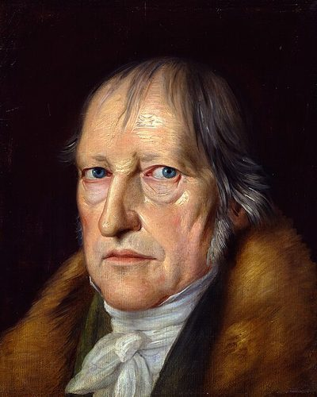

Ideologies / Conservative
What is Hegelian Constitutional Monarchism?
Hegelian Constitutional Monarchism is a political ideology in the Conservative family. Hegel holds that freedom is real only inside institutions. The family gives belonging, and civil society gives a market in which people pursue private ends, organised by trade corporations and corrected by public authority. Above both stands the state, the ethical whole in which citizens find their freedom. Its rational form is a constitutional monarchy with a hereditary monarch, a professional civil service and an assembly of estates. He rejects both pure popular sovereignty and a return to the feudal past.
Freedom made actual in the family, civil society and the state.
Defined from: G. W. F. Hegel, Elements of the Philosophy of Right (1820)
See how close you are to Hegelian Constitutional Monarchism Dare a friend to answer as one


Where Hegelian Constitutional Monarchism stands on 13 axes
Each axis runs from 0 to 100. A score of 50 is the middle. On a classic compass it sits in the Authoritarian Right quadrant.
| Axis | Position | Score | In words |
|---|---|---|---|
| EconomyMarket to Planned | 40 | Leans Market | |
| OwnershipPrivate to Collective | 20 | Strongly Private | |
| RightsLiberty to Security | 60 | Leans Security | |
| GovernmentDemocracy to Autocracy | 65 | Leans Autocracy | |
| StructureDecentralised to Centralised | 75 | Strongly Centralised | |
| NationInternationalist to Nationalist | 70 | Strongly Nationalist | |
| ImmigrationMulticulturalist to Assimilationist | 65 | Leans Assimilationist | |
| ValuesProgressive to Traditional | 65 | Leans Traditional | |
| TechnologyAccelerationist to Precautionary | 45 | Balanced | |
| EnvironmentIndustrialist to Environmentalist | 35 | Leans Industrialist | |
| ReligionSecular to Religious | 50 | Balanced | |
| MilitaryPacifist to Militarist | 70 | Strongly Militarist | |
| TradeFree Trade to Protectionist | 50 | Balanced |
Ideologies closest to Hegelian Constitutional Monarchism
- Gaullism87% alike
- One Nation Conservatism87% alike
- Bolivarianism86% alike
- Straussianism84% alike
- Carlylean Hero Worship83% alike
Its opposite on this map is Anarcho Primitivism, at 35%.
Parties near Hegelian Constitutional Monarchism
- National Resistance MovementUganda. Protecting the Gains (2025)88% alike
- Federalist PartyUnited States. The Federalist Papers (1788)85% alike
- Brothers of ItalyItaly. Pronti a risollevare l'Italia (2022)85% alike
- United RussiaRussia. People's Programme (2021)85% alike
Common questions
What is Hegelian Constitutional Monarchism?
Hegelian Constitutional Monarchism is a political ideology in the Conservative family. Hegel holds that freedom is real only inside institutions. The family gives belonging, and civil society gives a market in which people pursue private ends, organised by trade corporations and corrected by public authority. Above both stands the state, the ethical whole in which citizens find their freedom. Its rational form is a constitutional monarchy with a hereditary monarch, a professional civil service and an assembly of estates. He rejects both pure popular sovereignty and a return to the feudal past.
What does Hegelian Constitutional Monarchism believe?
In one line: Freedom made actual in the family, civil society and the state. Its strongest positions are Private, Centralised, Nationalist. Hegel holds that freedom is real only inside institutions. The family gives belonging, and civil society gives a market in which people pursue private ends, organised by trade corporations and corrected by public authority. Above both stands the state, the ethical whole in which citizens find their freedom. Its rational form is a constitutional monarchy with a hereditary monarch, a professional civil service and an assembly of estates. He rejects both pure popular sovereignty and a return to the feudal past.
Who founded Hegelian Constitutional Monarchism?
Hegelian Constitutional Monarchism is defined here from Elements of the Philosophy of Right (1820) by G. W. F. Hegel. The thinker most tied to it is Georg Wilhelm Friedrich Hegel (1770 to 1831).
Is Hegelian Constitutional Monarchism left wing or right wing?
On a classic two axis compass Hegelian Constitutional Monarchism falls in the Authoritarian Right quadrant, which means the economic right and the authoritarian side. Left and right hide a lot, though, which is why EthosScales scores it on thirteen separate axes.
How is Hegelian Constitutional Monarchism different from Gaullism?
They are close: 87% alike. The biggest gaps are on Government, where Hegelian Constitutional Monarchism scores 65 and Gaullism scores 45, and Trade, where Hegelian Constitutional Monarchism scores 50 and Gaullism scores 70. On each axis, 0 is one end and 100 is the other.
Think this is wrong? Suggest a correction. The scores are editorial estimates.